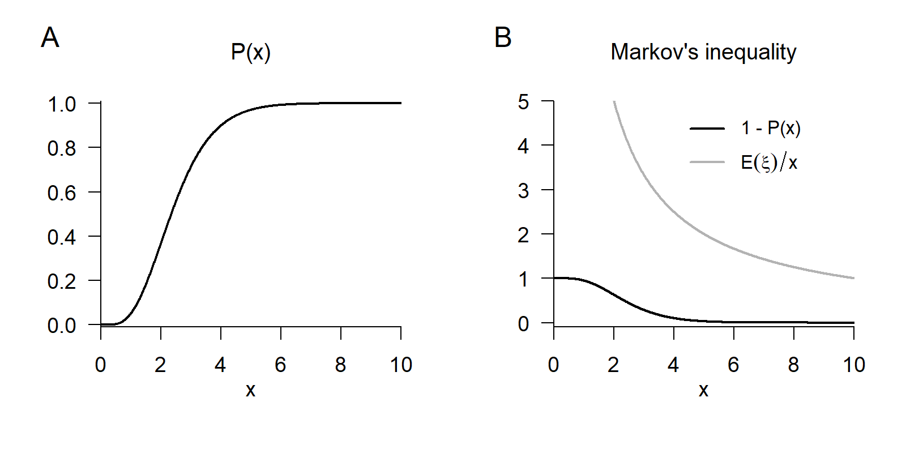
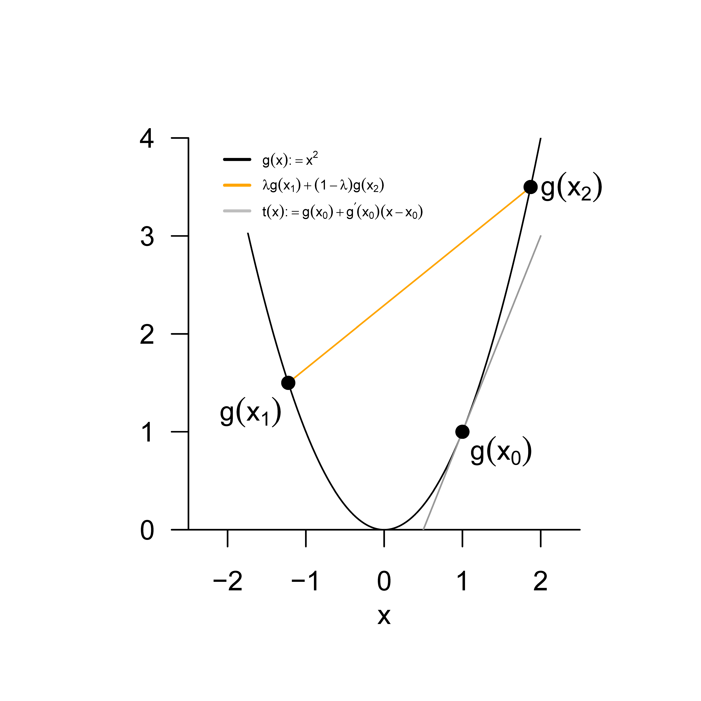

26 Inequalities
The topic of this chapter is inequalities that are frequently used in probability theory to bound probabilities and expectations. We group these inequalities accordingly into probability inequalities (Markov’s inequality and Chebyshev’s inequality, Section 26.1) and expectation inequalities (Cauchy-Schwarz inequality, correlation inequality, and Jensen’s inequality, Section 26.2).
26.1 Probability inequalities
Markov’s inequality establishes a relation between exceedance probabilities (see Theorem 21.2) and the expectation of a nonnegative random variable, that is, a random variable for which \(\mathbb{P}(\xi \ge 0 ) = 1\). In the proof of this inequality, we consider only the case of a continuous random variable.
Theorem 26.1 (Markov’s inequality) Let \(\xi\) be a random variable with \(\mathbb{P}(\xi \ge 0) = 1\). Then, for all \(x > 0\), \[\begin{equation} \mathbb{P}(\xi \ge x) \le \frac{\mathbb{E}(\xi)}{x}. \end{equation}\]
Proof. We consider the case of a continuous random variable \(\xi\) with PDF \(p\). We first note that \[\begin{equation} \mathbb{E}(\xi) = \int_{-\infty}^\infty s \, p(s)\,ds = \int_0^\infty s \, p(s)\,ds = \int_0^x s \, p(s)\,ds + \int_x^\infty s \, p(s)\,ds, \end{equation}\] because \(\xi\) is nonnegative. It follows that \[\begin{equation} \mathbb{E}(\xi) \ge \int_x^\infty s \, p(s)\,ds \ge \int_x^\infty x \, p(s)\,ds = x\int_x^\infty p(s)\,ds = x\, \mathbb{P}(\xi \ge x). \end{equation}\] Here, the first inequality holds because \[\begin{equation} \int_{0}^x s \, p(s)\,ds \ge 0, \end{equation}\] and the second inequality holds because \(x \le \xi\) for \(\xi \in [x,\infty[\). Thus, \[\begin{equation} \mathbb{E}(\xi) \ge x\, \mathbb{P}(\xi \ge x) \Leftrightarrow \mathbb{P}(\xi \ge x) \le \frac{\mathbb{E}(\xi)}{x}. \end{equation}\]
For example, if for a nonnegative random variable \(\xi\) we have \(\mathbb{E}(\xi) = 1\), then Markov’s inequality implies that \[\begin{equation} \mathbb{P}(\xi \ge 100) \le 0.01. \end{equation}\]
Example 26.1 (Markov’s inequality) As an example of Markov’s inequality, we consider the case of a gamma random variable \(\xi \sim G(\alpha,\beta)\). Gamma random variables are, by definition, nonnegative (see Definition 21.10). For the expectation of a gamma random variable, \(\mathbb{E}(\xi) = \alpha\beta\). We specifically consider the case \(\alpha := 5\) and \(\beta := 2\), so that \(\xi\) also corresponds to a \(\chi^2\) random variable with degrees-of-freedom parameter \(n = 10\). In Figure 26.1 A we show the CDF \(P\) of this random variable; in Figure 26.1 B we visualize the quantities \(\mathbb{E}(\xi)/x\) and the exceedance probability \(\mathbb{P}(\xi \ge x) = 1 - P(x)\) considered in Markov’s inequality. Clearly, Markov’s inequality holds.

Chebyshev’s inequality relates the probability that a random variable takes values far away from its expectation to its variance. As explained in Chapter 24, Chebyshev’s inequality thus provides a justification for why the quantity formulated in Definition 24.1 can be understood as a measure of the variability of a random variable. The proof of Chebyshev’s inequality relies crucially on Markov’s inequality.
Theorem 26.2 (Chebyshev’s inequality) Let \(\xi\) be a random variable with variance \(\mathbb{V}(\xi)\). Then, for all \(x \in \mathbb{R}\), \[\begin{equation} \mathbb{P}(|\xi - \mathbb{E}(\xi)| \ge x) \le \frac{\mathbb{V}(\xi)}{x^2}. \end{equation}\]
Proof. We first note that, for \(a,b \in \mathbb{R}\), \(a^2 \ge b^2\) implies \(|a| \ge b\). To see this, we consider the following four possible cases.
- \(a^2 \ge b^2\) for \(a \ge 0\) and \(b \ge 0\). Then \[\begin{equation} a^2 \ge b^2 \Rightarrow \sqrt{a^2} \ge \sqrt{b^2} \Rightarrow a \ge b \Rightarrow |a| \ge b. \end{equation}\]
- \(a^2 \ge b^2\) for \(a < 0\) and \(b \ge 0\). Then \[\begin{equation} a^2 \ge b^2 \Rightarrow \sqrt{a^2} \ge \sqrt{b^2} \Rightarrow -a \ge b \Rightarrow |a| \ge b. \end{equation}\]
- \(a^2 \ge b^2\) for \(a \ge 0\) and \(b < 0\). Then \[\begin{equation} a^2 \ge b^2 \Rightarrow \sqrt{a^2} \ge \sqrt{b^2} \Rightarrow a \ge -b \ge b \Rightarrow |a| \ge b. \end{equation}\]
- \(a^2 \ge b^2\) for \(a < 0\) and \(b < 0\). Then \[\begin{equation} a^2 \ge b^2 \Rightarrow \sqrt{a^2} \ge \sqrt{b^2} \Rightarrow -a \ge -b > b \Rightarrow |a| \ge b. \end{equation}\] Next, define \(\upsilon := (\xi - \mathbb{E}(\xi))^2\). Then evidently \(\upsilon \ge 0\), and Markov’s inequality implies \[\begin{align} \begin{split} \mathbb{P}\left(\upsilon \ge x^2\right) & \le \frac{\mathbb{E}(\upsilon)}{x^2} \\ \Leftrightarrow \mathbb{P}\left((\xi - \mathbb{E}(\xi))^2 \ge x^2 \right) & \le \frac{\mathbb{E}\left((\xi - \mathbb{E}(\xi))^2 \right)}{x^2} \\ \Leftrightarrow \mathbb{P}(|\xi - \mathbb{E}(\xi)| \ge x) & \le \frac{\mathbb{V}(\xi)}{x^2}. \end{split} \end{align}\]
26.2 Expectation inequalities
The Cauchy-Schwarz inequality is a central inequality of modern mathematics that is used in various mathematical areas such as analysis, vector space theory, and probability theory (see Steele (2006)). In relation to expectations of random variables, it has the following form.
Theorem 26.3 (Cauchy-Schwarz inequality) Let \(\xi\) and \(\upsilon\) be two random variables, and let \(\mathbb{E}(\xi\upsilon)\) be finite. Then \[\begin{equation} \mathbb{E}(\xi\upsilon)^2 \le \mathbb{E}\left(\xi^2\right)\mathbb{E}\left(\upsilon^2 \right). \end{equation}\]
For a proof, we refer to the proof of Theorem 4.6.2 in DeGroot & Schervish (2012). Analogously to Theorem 26.3, for example, for vectors \(x,y \in \mathbb{R}^n\), \[\begin{equation} \langle x,y \rangle^2 \le \langle x,x \rangle \langle y,y \rangle. \end{equation}\]
In the context of probabilistic data analysis, the Cauchy-Schwarz inequality is especially relevant in the proof of the so-called correlation inequality.
Theorem 26.4 (Correlation inequality) Let \(\xi\) and \(\upsilon\) be random variables with \(\mathbb{V}(\xi) > 0\) and \(\mathbb{V}(\upsilon) > 0\). Then \[\begin{equation} \frac{\mathbb{C}(\xi,\upsilon)^2}{\mathbb{V}(\xi)\mathbb{V}(\upsilon)} \le 1 \mbox{ and } -1 \le \rho(\xi,\upsilon) \le 1. \end{equation}\]
Proof. By the Cauchy-Schwarz inequality for two random variables \(\alpha\) and \(\beta\), \[\begin{equation} \mathbb{E}(\alpha\beta)^2 \le \mathbb{E}\left(\alpha^2\right)\mathbb{E}\left(\beta^2\right). \end{equation}\] Now define \(\alpha := \xi -\mathbb{E}(\xi)\) and \(\beta := \upsilon - \mathbb{E}(\upsilon)\). Then the Cauchy-Schwarz inequality states precisely that \[\begin{equation} \mathbb{E}\left((\xi -\mathbb{E}(\xi))(\upsilon-\mathbb{E}(\upsilon))\right)^2 \le \mathbb{E}\left((\xi -\mathbb{E}(\xi))^2 \right) \mathbb{E}\left((\upsilon-\mathbb{E}(\upsilon))^2 \right). \end{equation}\] Thus, \[\begin{align} \begin{split} \mathbb{C}(\xi,\upsilon)^2 \le \mathbb{V}(\xi)\mathbb{V}(\upsilon) \Leftrightarrow \frac{\mathbb{C}(\xi,\upsilon)^2}{\mathbb{V}(\xi)\mathbb{V}(\upsilon)} \le 1. \end{split} \end{align}\] Furthermore, from the definition of correlation it follows immediately that \[\begin{equation} \rho(\xi,\upsilon)^2 \le 1. \end{equation}\] But then also \[\begin{equation} |\rho(\xi,\upsilon)| \le 1 \Leftrightarrow -1 \le \rho(\xi,\upsilon) \le 1, \end{equation}\] because \[\begin{equation} \rho(\xi,\upsilon)^2 \le 1 \Rightarrow \sqrt{\rho(\xi,\upsilon)^2} \le \sqrt{1} \Rightarrow \quad\rho(\xi,\upsilon) \le 1 \Rightarrow |\rho(\xi,\upsilon)| \le 1 \mbox{ for } \rho(\xi,\upsilon) \ge 0 \end{equation}\] and \[\begin{equation} \rho(\xi,\upsilon)^2 \le 1 \Rightarrow \sqrt{\rho(\xi,\upsilon)^2} \le \sqrt{1} \Rightarrow -\rho(\xi,\upsilon) \le 1 \Rightarrow |\rho(\xi,\upsilon)| \le 1 \mbox{ for } \rho(\xi,\upsilon) < 0. \end{equation}\]
The correlation inequality is sometimes also called the covariance inequality. In particular, it states that the correlation of random variables is normalized, that is, it always takes values between -1 and 1 inclusive (see Chapter 25).
Finally, Jensen’s inequality provides bounds for the expectation of a random variable transformed by a convex or concave function. It is used in the consideration of properties of parameter estimators and, in particular, as a foundation of variational Bayesian inference. Recall that a convex function \(g\) is characterized by the fact that the graph of \(g\) over an interval \([x_1,x_2]\) always lies below the line connecting the function values \(g(x_1)\) and \(g(x_2)\), whereas for a concave function \(g\) it always lies above the line connecting the function values \(g(x_1)\) and \(g(x_2)\). We visualize this for a convex function in Figure 26.2.
Theorem 26.5 (Jensen’s inequality) Let \(\xi\) be a random variable and let \(g : \mathbb{R} \to \mathbb{R}\) be a convex function, that is, \[\begin{equation} g(\lambda x_1 + (1-\lambda)x_2) \le \lambda g(x_1) + (1-\lambda)g(x_2) \end{equation}\] for all \(x_1,x_2 \in \mathbb{R}, \lambda \in [0,1]\). Then \[\begin{equation} \mathbb{E}(g(\xi)) \ge g(\mathbb{E}(\xi)). \end{equation}\] Analogously, let \(g : \mathbb{R} \to \mathbb{R}\) be a concave function, that is, \[\begin{equation} g(\lambda x_1 + (1-\lambda)x_2) \ge \lambda g(x_1) + (1-\lambda)g(x_2) \end{equation}\] for all \(x_1,x_2 \in \mathbb{R}, \lambda \in [0,1]\). Then \[\begin{equation} \mathbb{E}(g(\xi)) \le g(\mathbb{E}(\xi)). \end{equation}\]
Proof. Let \(g\) be a convex function. Then, for the tangent \(t\) of \(g\) at \(x_0 \in \mathbb{R}\), for all \(x \in \mathbb{R}\), \[\begin{equation} g(x) \ge t(x) := g(x_0) + g'(x_0)(x - x_0). \end{equation}\] Now set \(x := \xi\) and \(x_0 := \mathbb{E}(\xi)\). Then the above inequality gives \[\begin{equation} g(\xi) \ge g(\mathbb{E}(\xi)) + g'(\mathbb{E}(\xi))(\xi - \mathbb{E}(\xi)). \end{equation}\] Taking expectations yields \[\begin{align} \begin{split} \mathbb{E}(g(\xi)) & \ge \mathbb{E}(g(\mathbb{E}(\xi))) + \mathbb{E}(g'(\mathbb{E}(\xi))(\xi - \mathbb{E}(\xi))) \\ \Leftrightarrow \mathbb{E}(g(\xi)) & \ge g(\mathbb{E}(\xi)) + g'(\mathbb{E}(\xi))\mathbb{E}((\xi - \mathbb{E}(\xi))) \\ \Leftrightarrow \mathbb{E}(g(\xi)) & \ge g(\mathbb{E}(\xi)) + g'(\mathbb{E}(\xi))(\mathbb{E}(\xi) - \mathbb{E}(\xi)) \\ \Leftrightarrow \mathbb{E}(g(\xi)) & \ge g(\mathbb{E}(\xi)). \end{split} \end{align}\] Now let \(g\) be a concave function. Then \(-g\) is a convex function. With Jensen’s inequality for convex functions, Jensen’s inequality for concave functions follows from \[\begin{align} \begin{split} \mathbb{E}(-g(\xi)) & \ge -g(\mathbb{E}(\xi)) \\ \Leftrightarrow -\mathbb{E}(g(\xi)) & \ge -g(\mathbb{E}(\xi)) \\ \Leftrightarrow \mathbb{E}(g(\xi)) & \le g(\mathbb{E}(\xi)). \end{split} \end{align}\]
In the context of variational Bayesian inference, it is fundamental that the logarithm is a concave function, and hence for an arbitrary random variable \(\xi\), \[\begin{equation} \mathbb{E}(\ln \xi) \le \ln \mathbb{E}(\xi). \end{equation}\]

Study questions
- State Markov’s inequality.
- State Chebyshev’s inequality.
- State the Cauchy-Schwarz inequality.
- State the correlation inequality.
Study question answers
- See Theorem 26.1.
- See Theorem 26.2.
- See Theorem 26.3.
- See Theorem 26.4.